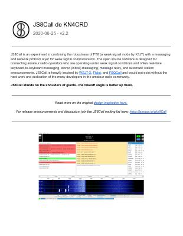

JS8Call User Guide

Important Note About The JS8Call User Guide
JS8Call version 2.2.0 and this user guide were originally released in June 2020. No official program updates were published again until version 2.3.0, which was released in June 2025. The development team is currently working on an updated user guide; until then, this document remains the most recent version available. While some links in the guide are no longer active, the content is still relevant and provides solid foundational training for using JS8Call.
Download version 2.2.0 of the User Guide Here: JS8Call User Guide
Download Links For JS8Call Version 2.5.0
Note: for SHA-256 checksums, licensing information, source code, release history, and to report issues or contribute to development, please visit the JS8Call repository on Github: https://github.com/JS8Call-improved/JS8Call-improved.
Clarification on the JS8Call Name and Project Organization
We want to clear up some recent confusion regarding the JS8Call name, the JS8Call-Improved organization, and recent version releases.
For many years, the program was released under the name js8call, and development took place under the js8call organization.
With the release of version 2.4.0, two changes occurred at the same time:
- The application name was released as JS8Call-Improved
- A new development organization was created called JS8Call-improved
Beginning with version 2.5.0, the application name was restored to JS8Call, which remains the official name of the software going forward. The development organization, however, continues to operate under the JS8Call-Improved name.
The official website for the JS8Call project is: js8call-improved.github.io
Development Team Update
The development team has continued to grow and now consists of 11 contributors. Jordan Sherer, the original creator of js8call, remains an active member of the development team.
We appreciate the community’s patience and continued support as the project evolves. Our goal remains to maintain clarity, continuity, and transparency while advancing JS8Call’s development.
Major Features For The 2.5.0 Release
- WSJT-X UDP Protocol Support - Added WSJT-X UDP protocol reporting support for better integration with logging software
- User Guide - Added comprehensive JS8Call User Guide to Help menu (PDF and editable .docx source)
- Software Update Notifier - Fixed and improved the automatic update check feature
- Reduced Headers for Small Screens - Added optional reduced-length strings for table headers and cells to optimize space on small displays (toggle in View menu)
Decoder Improvements (Major Performance Boost)
- Soft Combining - Added soft combining of repeat frames for SNR improvement
- Per-tone/Per-symbol Noise + LLR Whitening - Better noise handling
- Per-symbol Frequency Tracker - Added PLL/Kalman filter for improved frequency tracking
- LDPC Erasure Handling - Multi-pass feedback for better error correction
- Decoder Quality - Fixed assumptions that lowered decode quality on non-normal modes
- Multi-pass Decoding - Decoder improvements broken out into separate classes for better maintainability
Bug Fixes
- Turbo Mode - Fixed bug causing initial symbols to be dropped in turbo mode unless tx_delay was configured
- Split Mode TX Frequency - Fixed logic bug preventing split mode tx frequency from being set correctly
- DIRECTED.txt Offset - Fixed program writing current user's offset to DIRECTED.txt instead of transmitted offset
- Type and Send Bug - Fixed bug that made it impossible to type and send
- hread Safety - Made isIdle() in Modulator thread-safe
- Hamlib Bug Workaround - Work around for hamlib bug #1966
Frequency/Band Updates
- New 60m Segment - Added 5363kHz to frequency list for new 60m band segment
- 160m Frequency - Moved 160m frequency to 1843.5 dial to prevent interference from FT8
UI Improvements
- TX Delay Minimum - Reduced minimum Tx delay setting to 100ms (necessary to prevent clipping leading symbols)
- Clearer Context Menu - Made station list context menu clearer about what will be cleared
- HB Button UI - Re-established previous HB-button UI
- Table Headers - Disabled mouseover/click behavior on table headers in band activity and callsign tables
- About Dialog - Updated About dialog with FFmpeg legal notices and cleaner presentation
PSK Reporter Improvements
- Made callsign cache band-awar
- Fixed callsign cache timeout logic
- Extended callsign cache expiration to 1 hour (from 5 minutes)
- Added randomness to reporting interval
- Removed 49 MHz+ cache bypass inherited from WSJT-X
Documentation & Build
- Hamlib Updated - Updated to Hamlib 4.6.5 (from 4.6.4) across all platforms
- Build Attestations - Added build attestations for Linux, Windows, and MacOS
- Linux Build Scripts - Improved Linux build scripts, added support for KDE Plasma
- CI/CD - Added GitHub Actions CI for Linux, Windows, MacOS (including ARM64 support)
- Doxygen - Added Doxygen documentation hooks throughout codebase
- Qt 6.9 Compatibility - Fixed deprecated setTimeSpec for Qt 6.9
Code Cleanup
- Major code reorganization: moved loose source/header files to group folders
- Renamed all header files with .h extension
- Reformatted entire codebase to LLVM C++ standard
- Removed unused and legacy files
- Fixed MessageBox naming conflict with Microsoft's #define
Licensing
- Updated LICENSE and About dialog to include FFmpeg licensing requirements
Bottom Line: Version 2.5.0 brings significant decoder performance improvements, better WSJT-X integration, enhanced PSK Reporter functionality, and numerous bug fixes while maintaining compatibility with the latest toolchains.